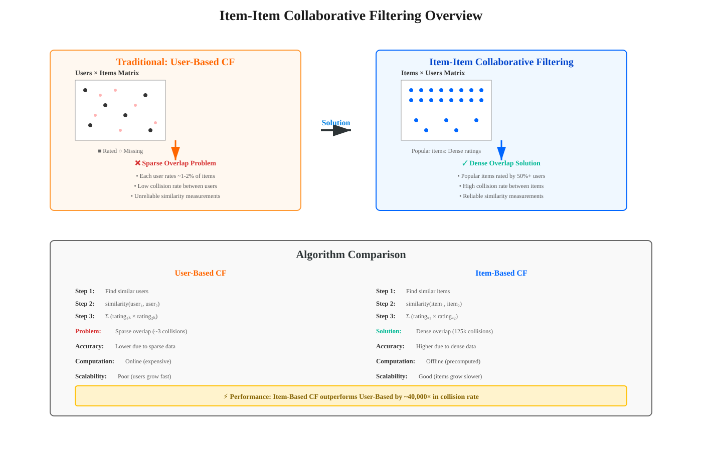
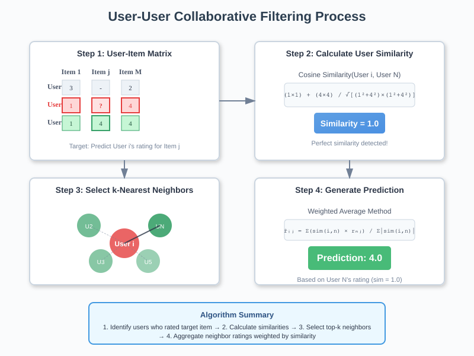
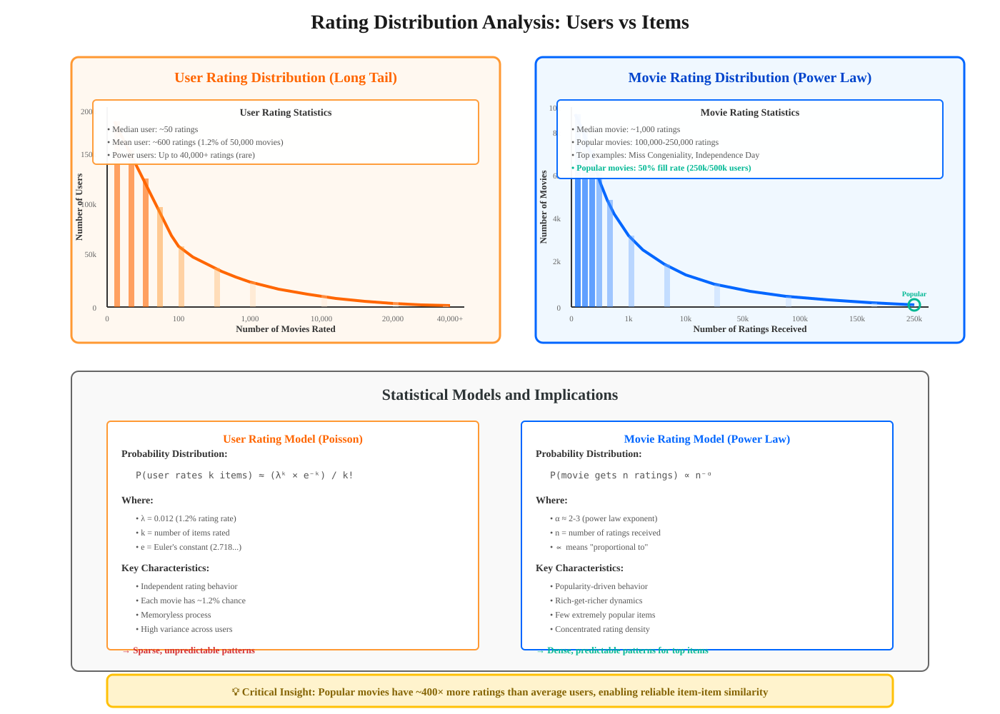
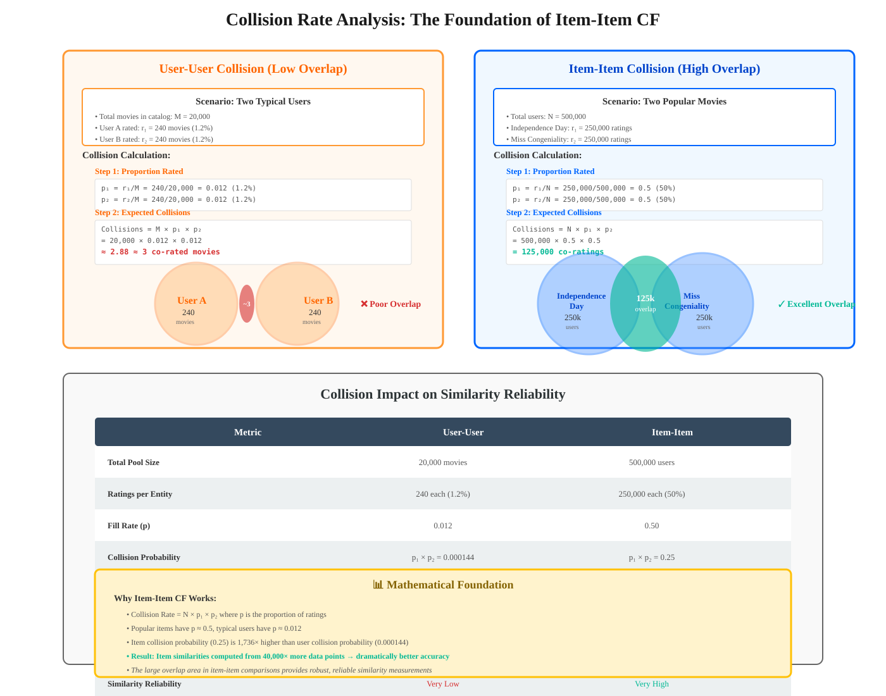

Item-Item Collaborative Filtering
Comprehensive Guide to Item-Based Recommendation Systems
Quick Navigation
- Introduction
- The Sparsity Problem
- Rating Distribution Analysis
- Item-Item Approach
- Collision Analysis
- Implementation Considerations
- Practical Applications
- References & Further Reading
Introduction
Item-Item Collaborative Filtering represents a paradigm shift in recommendation systems, moving from user-centric to item-centric similarity computation. This approach addresses fundamental limitations in traditional user-based collaborative filtering, particularly in scenarios with sparse user-item interaction matrices.

Core Concept:
Traditional collaborative filtering assumes that users with similar preferences will rate items similarly. Item-Item collaborative filtering inverts this logic: items rated similarly by users are likely similar items, and users who liked one item will likely enjoy similar items.
Key Advantages:
- Improved Accuracy: Better similarity measurements due to denser data in item space
- Computational Efficiency: Item similarities can be precomputed and updated less frequently
- Scalability: Number of items typically grows slower than number of users
- Stability: Item relationships are more stable over time than user preferences
Fundamental Difference:
- User-Based CF: Groups users by similar preferences, recommends based on similar users
- Item-Based CF: Groups items by similar rating patterns, recommends based on similar items
The Sparsity Problem
The primary challenge in user-based collaborative filtering stems from the extreme sparsity of the user-item rating matrix. Understanding this problem is crucial to appreciating why item-based approaches perform better.

Matrix Sparsity Characteristics:
- High Dimensionality: Modern platforms have millions of users and items
- Low Fill Rate: Typical user rates <1-2% of available items
- Sparse Interactions: Most matrix entries are missing (unrated)
- Placeholder Ratings: Missing entries filled with artificial values (e.g., rating of 3)
Computational Challenge:
When computing similarity between two users using inner products:
similarity(user_i, user_j) = Σ(rating_i,k × rating_j,k)
Where:
- user_i, user_j = User rating vectors (rows in the matrix)
- rating_i,k = Rating by user i for item k
- k = Iterates over all items
- Most terms involve placeholder × placeholder or placeholder × actual rating
The Overlap Problem:
When aligning two user rating vectors:
- Black entries = Actual ratings provided by user
- Red entries = Missing ratings (placeholders)
- Collision rate = Percentage where both users rated the same item
In practice, the collision rate between random user pairs is extremely low (typically <5%), resulting in unreliable similarity measurements.
Visual Representation:
User Matrix (Reality):
■ = Rated item (black)
○ = Missing rating (red placeholder)
User 1: ■ ○ ○ ○ ■ ○ ○ ○ ○ ○ ○ ■ ○ ○ ○ ...
User 2: ○ ○ ■ ○ ○ ○ ■ ○ ○ ○ ○ ○ ○ ■ ○ ...
Overlap: (minimal)
Statistical Distribution:
The distribution of missing entries follows specific patterns that impact recommendation quality. Users exhibit heterogeneous rating behavior, with some power users rating thousands of items while most rate only a handful.
Rating Distribution Analysis
Understanding the distribution of ratings across users and items reveals why item-based approaches outperform user-based methods in typical recommendation scenarios.

User Rating Distribution:
Empirical data from platforms like Netflix reveals a long-tail distribution:
- Heavy users: Small fraction rating up to 40,000+ movies
- Typical users: Majority rating <100 movies
- Median behavior: Most users rate 20-50 items
- Statistical model: Approximately follows Poisson distribution with λ ≈ 1.2%
Mathematical Characterization:
P(user rates k items) ≈ (λ^k × e^(-λ)) / k!
Where:
- λ = Average rating rate (≈1.2% of catalog)
- k = Number of items rated
- e = Euler's constant
- This models independent rating behavior across users
Movie Rating Distribution:
The item-side distribution shows even more pronounced concentration:
- Popular items: Small fraction receiving 100,000+ ratings
- Average items: Moderate number of ratings (1,000-10,000)
- Long tail: Majority of items have very few ratings
- Power law behavior: Few items dominate the rating volume
Key Insight:
The critical observation is that popular items have substantially more ratings than typical users. For example:
- Miss Congeniality: ~250,000 ratings
- Independence Day: ~250,000 ratings
- Average user: ~600 ratings (for 500,000 total users with 1.2% rating rate)
This asymmetry creates approximately 400× more data per popular item compared to an average user.
Implications for Similarity Computation:
Rating Density:
- Average user: 1.2% of items rated
- Popular item: 50% of users rated (250,000/500,000)
Collision Probability:
- User-User: 1.2% × 1.2% ≈ 0.014% overlap
- Item-Item: 50% × 50% = 25% overlap
This dramatic difference (1,785× more collisions for items) directly translates to more reliable similarity measurements.
Item-Item Approach
Item-Item Collaborative Filtering leverages the denser rating patterns of popular items to compute more accurate similarity measurements and generate better recommendations.
Core Algorithm:
Instead of finding similar users and recommending what they liked, we:
- Compute Item Similarity: Find items similar to those the user has rated
- Predict Missing Ratings: Estimate ratings based on similar items the user has rated
- Generate Recommendations: Suggest items with highest predicted ratings
Item Similarity Computation:
For two items i and j, similarity is computed using their rating vectors (columns in the matrix):
similarity(item_i, item_j) = Σ(rating_u,i × rating_u,j) / normalization
Where:
- item_i, item_j = Item rating vectors (columns in the matrix)
- rating_u,i = Rating by user u for item i
- u = Iterates over all users who rated both items
- normalization = √(Σ rating_u,i²) × √(Σ rating_u,j²) for cosine similarity
Prediction Formula:
To predict user u's rating for item i:
predicted_rating_u,i = (Σ similarity(i,j) × rating_u,j) / (Σ |similarity(i,j)|)
Where:
- j = Items already rated by user u
- similarity(i,j) = Precomputed similarity between items i and j
- rating_u,j = User u's actual rating for item j
- Sum is over all rated items j similar to target item i
Example Scenario:
Consider predicting ratings for the movie "Ghost":
- Similar movies: "Dirty Dancing", "Pretty Woman", "Sleepless in Seattle"
- User's ratings: Dirty Dancing (5★), Pretty Woman (4★), Sleepless (4★)
- Similarities: Ghost-Dirty Dancing (0.85), Ghost-Pretty Woman (0.78), Ghost-Sleepless (0.72)
Prediction calculation:
predicted_rating(Ghost) = (0.85×5 + 0.78×4 + 0.72×4) / (0.85 + 0.78 + 0.72)
= (4.25 + 3.12 + 2.88) / 2.35
= 10.25 / 2.35
= 4.36 stars
Why This Works Better:
- Dense overlap: Popular items have ratings from 50%+ of users
- Reliable similarity: Based on tens of thousands of co-ratings
- Stable patterns: Item relationships are more stable than user preferences
- Scalability: Item similarities can be precomputed offline
Algorithmic Advantages:
- Precomputation: Item-item similarity matrix computed once, updated periodically
- Fast predictions: Real-time predictions use lookup + weighted average
- Interpretability: Easy to explain recommendations ("because you liked X")
- Cold start handling: New users immediately get recommendations based on few ratings
Collision Analysis
The collision rate—the number of co-rated items when computing similarity—is the fundamental metric that determines the reliability of collaborative filtering algorithms.

Mathematical Analysis:
For two popular movies (e.g., Independence Day and Miss Congeniality):
Given:
- Total users: N = 500,000
- Ratings for Independence Day: r₁ = 250,000
- Ratings for Miss Congeniality: r₂ = 250,000
Proportion rated:
- p₁ = r₁/N = 250,000/500,000 = 0.5
- p₂ = r₂/N = 250,000/500,000 = 0.5
Expected collisions (assuming independence):
- Collisions = N × p₁ × p₂
- Collisions = 500,000 × 0.5 × 0.5
- Collisions = 125,000 co-ratings
Comparison with User-Based Approach:
For two typical users (each rating 1.2% of movies):
Given:
- Total movies: M = 20,000
- Ratings by user 1: r₁ = 240 (1.2% of 20,000)
- Ratings by user 2: r₂ = 240
Proportion rated:
- p₁ = r₁/M = 240/20,000 = 0.012
- p₂ = r₂/M = 240/20,000 = 0.012
Expected collisions:
- Collisions = M × p₁ × p₂
- Collisions = 20,000 × 0.012 × 0.012
- Collisions = 2.88 ≈ 3 co-ratings
Collision Rate Comparison:
- Item-Item (popular movies): 125,000 collisions
- User-User (typical users): 3 collisions
- Improvement factor: 41,667× more data points
Statistical Reliability:
With more collisions, we get:
- Lower variance: Standard error decreases as 1/√n
- Better estimates: Similarity measurements approach true values
- Reduced noise: Random fluctuations average out
- Confidence intervals: Narrower confidence bands for predictions
Standard Error Analysis:
Standard Error of Similarity:
SE = σ/√n
Where:
- σ = Standard deviation of rating differences
- n = Number of collisions
- For items: SE = σ/√125,000 ≈ σ/354
- For users: SE = σ/√3 ≈ σ/1.73
- Reliability ratio: 354/1.73 ≈ 205× better
Practical Implications:
- Item-based similarities are computed from massive datasets (10,000-100,000+ co-ratings)
- User-based similarities often computed from <10 co-ratings
- Prediction accuracy directly correlates with collision rates
- Algorithm performance dramatically better for item-based approaches
Real-World Impact:
In production systems:
- Netflix: Item-based CF significantly outperformed user-based CF
- Amazon: "Customers who bought this also bought" uses item-based approach
- YouTube: Video-video similarity enables effective recommendations
- Spotify: Track-track similarity powers playlist generation
Implementation Considerations
Implementing Item-Item Collaborative Filtering in production systems requires careful attention to computational efficiency, scalability, and update strategies.
Architecture Overview:
Offline Component:
- Similarity computation: Precompute item-item similarity matrix
- Update frequency: Recompute daily, weekly, or on-demand
- Storage: Sparse matrix format for efficiency
- Pruning: Keep only top-k most similar items per item
Online Component:
- Prediction generation: Fast lookup and weighted average
- Caching: Cache frequent predictions
- Personalization: Real-time combination of item similarities with user history
- Ranking: Sort predictions for recommendation display
Similarity Computation Methods:
Cosine Similarity:
cos_sim(i,j) = (Σ r_u,i × r_u,j) / (√(Σ r_u,i²) × √(Σ r_u,j²))
Advantages:
- Normalized to [-1, 1] range
- Handles different rating scales
- Geometric interpretation (angle between vectors)
Pearson Correlation:
pearson(i,j) = Σ((r_u,i - r̄_i) × (r_u,j - r̄_j)) / (√(Σ(r_u,i - r̄_i)²) × √(Σ(r_u,j - r̄_j)²))
Advantages:
- Accounts for item rating bias
- Centers ratings around mean
- Better for items with different rating distributions
Adjusted Cosine Similarity:
adj_cos(i,j) = Σ((r_u,i - r̄_u) × (r_u,j - r̄_u)) / (√(Σ(r_u,i - r̄_u)²) × √(Σ(r_u,j - r̄_u)²))
Advantages:
- Accounts for user rating bias (some users rate higher)
- Often performs best in practice
- Recommended for most applications
Scalability Strategies:
Dimensionality Reduction:
- Top-k filtering: Keep only k most similar items per item (k=50-200)
- Threshold filtering: Discard similarities below threshold (e.g., <0.1)
- Sparse matrix storage: Use compressed sparse row (CSR) format
- Approximate methods: Locality-sensitive hashing (LSH) for large catalogs
Distributed Computing:
- MapReduce: Compute item pairs in parallel across cluster
- Spark: Use RDD/DataFrame operations for similarity computation
- Parameter server: Distributed storage of similarity matrix
- GPU acceleration: Matrix operations on GPU for speed
Update Strategies:
Incremental Updates:
- New ratings: Update only affected item similarities
- Matrix factorization hybrid: Combine with latent factor models
- Temporal decay: Weight recent ratings more heavily
- Online learning: Continuously update as new data arrives
Cold Start Handling:
New Items:
- Content-based fallback: Use item metadata (genre, director, actors)
- Popularity baseline: Show generally popular items
- Hybrid approach: Combine collaborative and content-based features
- Active learning: Strategically ask for ratings on new items
New Users:
- Immediate recommendations: Based on first few ratings
- Onboarding process: Ask for ratings on diverse popular items
- Demographic defaults: Use age/location for initial recommendations
- Social network: Leverage friend preferences if available
Quality Metrics:
Offline Evaluation:
- RMSE: Root mean squared error on held-out test set
- MAE: Mean absolute error for interpretability
- Precision@k: Fraction of top-k recommendations that are relevant
- Recall@k: Fraction of relevant items in top-k
- NDCG: Normalized discounted cumulative gain for ranking quality
Online Evaluation:
- Click-through rate: Percentage of recommendations clicked
- Conversion rate: Purchases/views from recommendations
- Engagement: Time spent with recommended items
- A/B testing: Compare algorithms in production
Practical Applications
Item-Item Collaborative Filtering powers recommendation systems across diverse industries and platforms, demonstrating its versatility and effectiveness.
🎬 Entertainment & Media
Netflix:
- Original application: One of the first large-scale deployments
- Movie recommendations: Based on viewing and rating history
- Row generation: "Because you watched X" powered by item similarity
- Performance: Significantly improved over user-based methods
Spotify:
- Playlist generation: Similar songs based on listening patterns
- Radio feature: Continuous play of similar tracks
- Discover Weekly: Hybrid approach including item-based CF
- Collaborative playlists: Aggregate similar tracks from multiple users
YouTube:
- Related videos: Item-based similarity drives sidebar recommendations
- Autoplay: Continuous viewing based on video similarity
- Homepage: Personalized video suggestions
- Live recommendations: Real-time updates based on current viewing
🛒 E-Commerce
Amazon:
- "Customers who bought this also bought": Classic item-based CF
- Frequently bought together: Bundle recommendations
- Product recommendations: Personalized homepage
- Email campaigns: Item-based suggestions in marketing
eBay:
- Similar listings: Show related products
- Cross-sell opportunities: Suggest complementary items
- Personalized search: Rank results by user preferences
- Watch list suggestions: Recommend based on saved items
📱 Social Media & Content
Pinterest:
- Related pins: Similar images and content
- Board suggestions: Recommend collections
- Search results: Personalize based on user behavior
- Home feed: Mix of followed and similar content
Reddit:
- Subreddit recommendations: Similar communities
- Post suggestions: Related discussions
- User discovery: Find users with similar interests
- Content moderation: Identify similar potentially problematic content
📚 Knowledge & Learning
Coursera/edX:
- Course recommendations: Based on completed and enrolled courses
- Learning paths: Suggest course sequences
- Skill development: Recommend complementary courses
- Career tracks: Guide professional development
Goodreads:
- Book recommendations: Similar books based on ratings
- Reading lists: Curated suggestions
- Author discovery: Find similar writers
- Genre exploration: Navigate related categories
🎮 Gaming
Steam:
- Game recommendations: Based on library and playtime
- Discovery queue: Personalized game browsing
- Similar games: Find alternatives
- Bundle suggestions: Package recommendations
🏨 Travel & Hospitality
Airbnb:
- Property recommendations: Similar listings
- Experience suggestions: Activities based on bookings
- Destination exploration: Related locations
- Price comparison: Similar properties at different price points
TripAdvisor:
- Hotel recommendations: Similar properties
- Restaurant suggestions: Based on reviews
- Attraction discovery: Related activities
- Travel planning: Complete itinerary suggestions
💼 Business Applications
LinkedIn:
- Job recommendations: Based on profile and applications
- Connection suggestions: Professional network growth
- Content feed: Articles and posts from similar professionals
- Learning recommendations: Professional development courses
Salesforce:
- Lead scoring: Similar successful conversions
- Product recommendations: Cross-sell opportunities
- Content suggestions: Sales enablement materials
- Customer segmentation: Group similar customers
🔬 Research & Academia
Research Paper Recommendations:
- ArXiv: Related papers based on reading history
- Google Scholar: Citation-based similarity
- Mendeley: Literature discovery
- ResearchGate: Collaborative filtering for researchers
🎵 Music & Audio
Pandora:
- Music Genome Project: Hybrid content and collaborative
- Station creation: Similar song discovery
- Thumbs up/down: Refine recommendations
- Artist radio: Explore similar musicians
SoundCloud:
- Related tracks: Audio similarity
- Artist recommendations: Find new creators
- Playlist continuation: Suggest next tracks
- Genre exploration: Navigate music styles
📰 News & Content Aggregation
Flipboard:
- Article recommendations: Based on reading history
- Topic exploration: Related content areas
- Source discovery: Find similar publications
- Personalized magazines: Curated content collections
Google News:
- Story recommendations: Similar articles
- Topic tracking: Follow related stories
- Source diversity: Multiple perspectives on similar topics
- Breaking news: Context from related coverage
References & Further Reading
📚 Foundational Papers
- Sarwar, B., Karypis, G., Konstan, J., & Riedl, J. (2001)
- "Item-based collaborative filtering recommendation algorithms"
- Proceedings of WWW '01
- https://doi.org/10.1145/371920.372071
-
The seminal paper introducing item-based collaborative filtering
-
Linden, G., Smith, B., & York, J. (2003)
- "Amazon.com recommendations: Item-to-item collaborative filtering"
- IEEE Internet Computing, 7(1), 76-80
- https://doi.org/10.1109/MIC.2003.1167344
-
Amazon's production implementation and lessons learned
-
Deshpande, M., & Karypis, G. (2004)
- "Item-based top-N recommendation algorithms"
- ACM Transactions on Information Systems, 22(1), 143-177
- https://doi.org/10.1145/963770.963776
- Comprehensive analysis of top-N recommendation generation
📖 Books
- Aggarwal, C. C. (2016)
- "Recommender Systems: The Textbook"
- Springer
-
Comprehensive coverage of collaborative filtering techniques including detailed item-based methods
-
Ricci, F., Rokach, L., & Shapira, B. (2015)
- "Recommender Systems Handbook" (2nd Edition)
- Springer
- Industry standard reference with practical implementation guidance
🔬 Advanced Topics
- Koren, Y., Bell, R., & Volinsky, C. (2009)
- "Matrix factorization techniques for recommender systems"
- Computer, 42(8), 30-37
- https://doi.org/10.1109/MC.2009.263
-
Evolution beyond item-item CF to latent factor models
-
He, X., Liao, L., Zhang, H., Nie, L., Hu, X., & Chua, T. S. (2017)
- "Neural collaborative filtering"
- Proceedings of WWW '17
- https://doi.org/10.1145/3038912.3052569
-
Deep learning approaches building on collaborative filtering foundations
-
Ning, X., & Karypis, G. (2011)
- "SLIM: Sparse linear methods for top-N recommender systems"
- Proceedings of ICDM '11
- https://doi.org/10.1109/ICDM.2011.134
- Modern sparse item-item models with improved accuracy
🛠️ Implementation Resources
Python Libraries:
- Surprise: http://surpriselib.com/ - Scikit for recommendation systems
- Implicit: https://github.com/benfred/implicit - Fast collaborative filtering
- LightFM: https://github.com/lyst/lightfm - Hybrid recommendation algorithms
Tutorials & Code:
- Google Colab Notebook: Item-Item CF Implementation

-
Complete walkthrough with MovieLens dataset
-
Kaggle Datasets:
- MovieLens: https://www.kaggle.com/grouplens/movielens-20m-dataset
- Amazon Reviews: https://www.kaggle.com/datasets/snap/amazon-fine-food-reviews
Documentation & Courses:
- Stanford CS246: Mining Massive Datasets - Recommendation Systems Module
- Coursera: Recommender Systems Specialization (University of Minnesota)
- Fast.ai: Collaborative Filtering Deep Dive
Document Information:
- Version: 1.0
- Last Updated: October 2025
- Target Audience: ML Engineers, Data Scientists, Researchers
- Prerequisites: Linear algebra, basic statistics, Python programming
- Estimated Reading Time: 25-30 minutes